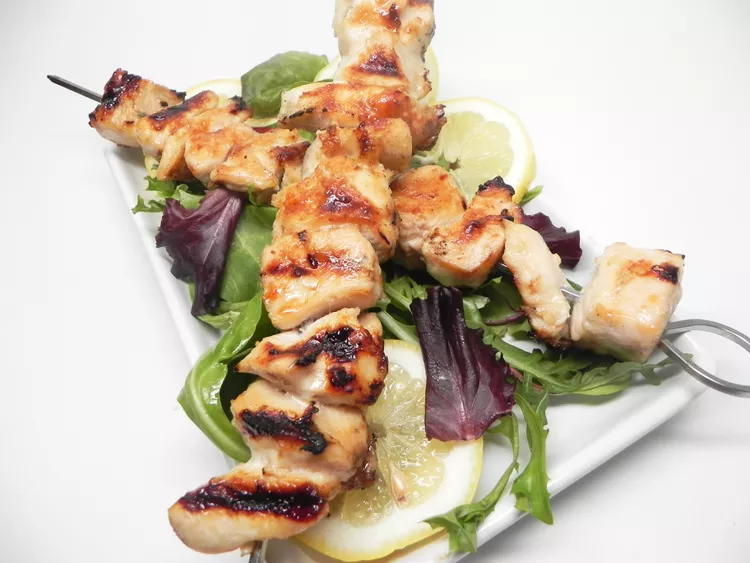

Lemon Garlic Chicken Kebab

Gorgeous sticky, garlicky chicken kebabs perfect for the barbeque!
Ingredients:
- ½ cup butter, melted
- 1 lemon, juiced and zested
- 1 tablespoon brown sugar
- 1 clove garlic, minced or pressed
- 4 boneless chicken breasts, cubed
- 4 skewers, or as needed
Steps:
- Combine butter, lemon juice, lemon zest, brown sugar, and garlic in a bowl. Add chicken and marinate for at least 1 hour.
- Preheat grill for high heat.
- Remove chicken from the marinade and shake off excess. Thread onto skewers.
- Lightly oil the grill grate. Arrange skewers on the prepared grill. Cook 15 to 20 minutes, turning occasionally, until chicken juices run clear.